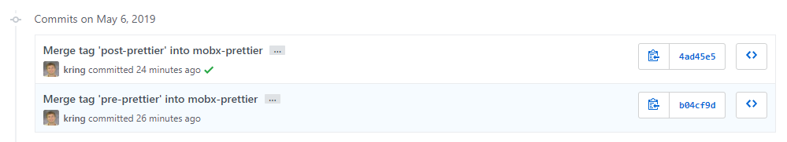

Getting Started
The easiest way to get started with TerriaJS is to use TerriaMap. TerriaMap is a full-featured application built on TerriaJS, ready to be customized with your own branding and catalog. It is also a great starting point for more in-depth customization.
This guide explains how to build and run TerriaMap locally. See Deploying to learn how to deploy it for use by others.
You may also be interested in how to make your own map without writing any code.
Quick Start
If you've done this sort of thing before, you'll find it easy to clone and build TerriaMap with these quick instructions:
git clone https://github.com/TerriaJS/TerriaMap.git
cd TerriaMap
npm install && npm run gulp && npm start
# Open at http://localhost:3001
If you run into trouble or want more explanation, read on.
Prerequisites
TerriaJS can be built and run on almost any macOS, Linux, or Windows system. The following are required to build TerriaJS:
- The Bash command shell. On macOS or Linux you almost certainly already have this. On Windows, you can easily get it by installing Git for Windows. In the instructions below, we assume you're using a Bash command prompt.
- Node.js v8.0 or later. v10.x is also known to work. You can check your node version by running
node --versionon the command-line. - npm v6.0 or later. npm is usually installed automatically alongside the above. You can check your npm version by running
npm --version.
The following components are optional:
- GDAL - Used for the conversion service that transforms Esri Shapefiles and other more obscure formats into GeoJSON for display in TerriaJS. This is not required for formats that TerriaJS supports directly, including KML, GeoJSON, etc.
Cloning TerriaMap
The latest version of TerriaMap is on GitHub, and the preferred way to get it is by using git:
git clone https://github.com/TerriaJS/TerriaMap.git
cd TerriaMap
If you're unable to use git, you can also download a ZIP file and extract it somewhere on your system. We recommend using git, though, because it makes it much easier to update to later versions in the future.
Installing Dependencies
All of the dependencies required to build and run TerriaMap, other than the prerequisites listed above, are installed using npm:
npm install
The dependencies are installed in the node_modules subdirectory. No global changes are made to your system.
Building TerriaMap
Do a standard build of TerriaMap with:
npm run gulp
Or, you can create a minified release build with:
npm run gulp release
To watch for changes and automatically do an incremental build when any are detected, use:
npm run gulp watch
npm run gulp simply runs gulp, so you can use that directly if you prefer (run npm install -g gulp to install it globally).
The full set of gulp tasks can be found on the Development Environment page.
Running TerriaMap
TerriaMap includes a simple Node.js-based web server, called terriajs-server. To start it, run:
npm start
Then, open a web browser on http://localhost:3001 to use TerriaMap.
Keeping up with Updates
If you're building an application by using TerriaMap as a starting point, you will want to keep in sync as TerriaMap is improved and updated to use new versions of TerriaJS. Forking the TerriaMap repo and using git to keep it in sync is outside the scope of this document, but GitHub has a nice explanation.
After pulling new changes, you will need to run npm install again to pick up any changed dependencies and then build TerriaMap. If you have problems building or running, it is sometimes helpful to remove and reinstall the dependencies from npm:
rm -rf node_modules
npm install
Prettier
Prettier is used to format this codebase.
If you've forked TerriaMap prior to prettier being applied, merging will be a hassle. Here's how to do it (relatively) painlessly:
- Create a new branch for your merge:
git checkout -b whatever-merge - If you haven't already installed
npm-merge-driver, add it to your local git config vianpx npm-merge-driver install. - Merge the last commit before prettier into your branch:
git merge pre-prettier. Resolve any conflicts as usual. If utilising yarn, it will resolve anyyarn-lock.jsonconflicts automatically with anotheryarn install - Commit the merge above.
- Merge the commit that ran prettier on all the source files into your branch. This is likely to cause heaps of conflicts, but because you've already merged the last commit before prettier, and because the prettier commit only changes formatting, you can safely accept your version any time there is a conflict.
git merge post-prettier --strategy=ours --no-commit - Run prettier on the result of the merge before committing it:
npm run prettier - Commit the merged result.
- Merge master into your branch in order to pick up any changes in master that happened after the prettiergeddon:
git merge origin/master. Resolve any conflicts as normal. - Commit and push your branch.
- Open a pull request of your merge branch into the original one. It should merge cleanly.
If you're merging a branch-that-has-already-followed-this-procedure into your branch, you can follow the procedure above except that you need to use different commits instead of pre-prettier and post-prettier. Look at the commits in the source branch and you should see two that look like this:

Use the commit hash of the commit that merged pre-prettier in place of pre-prettier above. Use the commit hash of the commit that merged post-prettier in place of post-prettier above.
Having trouble? Drop by the TerriaJS gitter or forum and we'll be happy to help!
Next Steps
Now that you have a working local build of TerriaMap, you may want to customize it or deploy it for others to use.